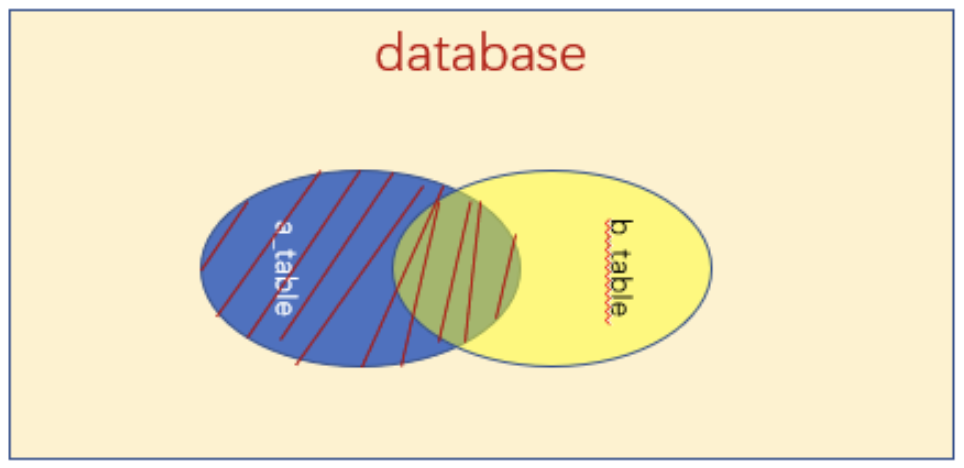
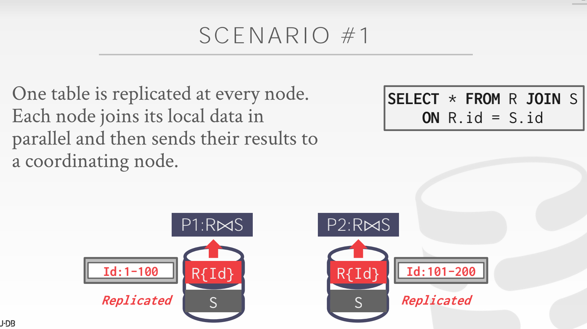
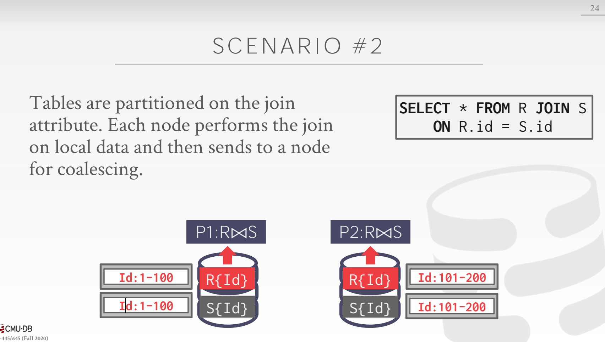
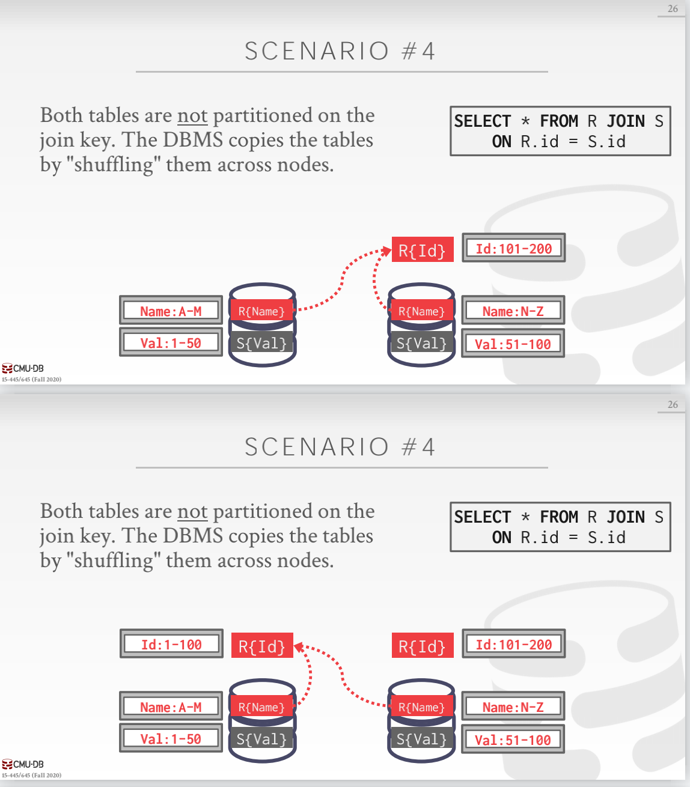
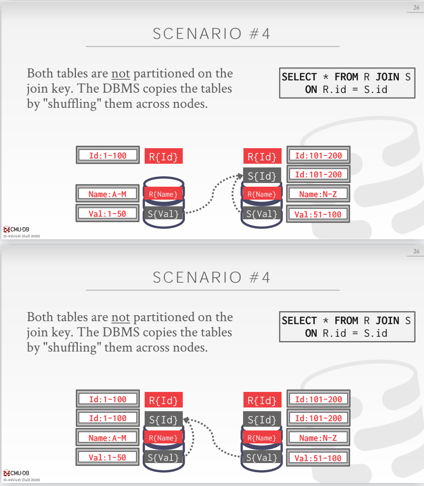
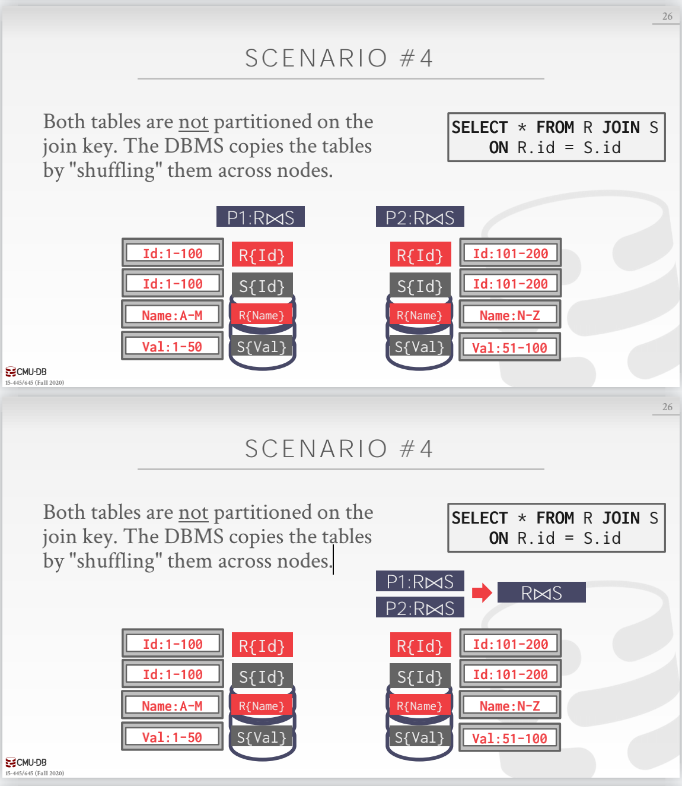

Join算法笔记整理
[TOC]
Join 算法
一个好的数据库的设计应该是尽量减少信息的重复和冗余，通常会将不同的数据放在不同的表中，对数据进行拆解分别存储。为了获取完整的分析数据，我们就需要从多表中取数据，将多个表连接成一个表，方便我们进行分析。
Join 一般分为 Inner Join 和 Outer Join，下面用两张图表示他们的区别

Inner Join 表示的是两个表的交集，
上图是 Left Outer Join 表示的是两个表，左边表数据行全部保留，右边表保留符合连接条件的行。
Join 算子的输出
对于表 R 和 S ，通过 Join 算子计算之后，Join 算子只会输出在 join attributes 上符合条件的行并且将两个表中的 tuple 连接起来输出。
实际系统中 Join 算子输出的的 tuple 的内容会不同，这主要取决于 DBMS 的执行器、存储模型和这个 query 本身。下面有几种 join 的通常的输出
- 直接输出数据：这种方法将外部表和内部表中的属性值复制到元组中，转换到一个中间结果表中。
- 优势：在于未来查询计划中的操作符永远不需要查询基表来获取更多数据
- 缺点：需要更多的内存来物化整个元组
- Record ID：在这种方法中，DBMS只复制连接键和记录id匹配的元组。这种方法对于列存储非常理想，因为DBMS不会复制不是查询所需要的列存储的数据。这就是
late materialization
Cost 估算
这是用于计算不同 join 算法将只会计算磁盘的 I/O。这包括从磁盘读取数据的 I/O 以及写出中间结果的 I/O。注意只有 I/O 被考虑到了，因为输出的结果的代价都是一样的。
Join 的本质就是暴⼒匹配，所有tuple的⽐较时间和最终输出的时间都相同，所以⽐较的就是不同算法之间将⻚⾯Page或者说磁盘块加载进⼊内存中IO的次数，IO的次数越少，join算法的效率越⾼
这里对下面的不同 Join 算法的估算做一个设定：
- 外部表 R 中有 M 个 page，m 个 tuple
- 内部表 S 中有 N 个 page，n 个 tuple
单机 Join 算法
这里只是介绍了一些基础的 Join 算法，还有更多针对 OLAP 系统的 Join 算法的改进这里并未总结到一起。
Nested Loop Join
简而言之，这种类型的连接算法由两个嵌套的for循环组成，它们遍历在两个表中的元组，并比较它们。如果元组匹配联接谓词，则输出它们。
位于外层for循环中的表称为外层表，而位于内部for循环中的表称为内部表。
DBMS总是希望使用“较小的”表作为外部表。可以用小来表示元组数或页面数。DBMS还希望尽可能多地缓冲外部表到内存中，同时外部表还可以尝试利用索引在内部表中查找匹配。
Simple Nested Loop Join
对于外部表的每个tuple，和内部表中的每个tuple进行匹配。这是最差的情况，因为 DBMS 必须对于外部表中的每个 tuple 都进行一次全量的 scan，
Cost：M + (m * N)
每次加载⼀个外部⻚⾯，每个外部⻚⾯的tuple都加载⼀个内部表的⻚⾯，就需要m*N次加载内部⻚⾯，然后外部表加载M次
Blocked Nested Loop Join
对于外部表中的每个 block，从内部表中取得每一个 block来进行两个 block 之间的遍历比较。这种算法可以有更少的磁盘 I/O，因为 DBMS 对于外部表的每个 block 扫描一次内部表而不是每个 tuple 都要扫描一次内部表
Cost：M + (M * N)
每次加载⼀个外部⻚⾯，每个外部⻚⾯的tuple都加载⼀个内部表的⻚⾯，就需要m*N次加载内部⻚⾯，然后外部表加载M次
当然，如果 DBMS 有 B 块 Buffer 来给 join 计算，那么每次就可以 scan B-2 个外部表的 block 进入到内存中来，将会使用一个 Buffer 来作为临时的输出的 block
Cost: M + (M / (B - 2)) * N
外部表每次加载B-2个⻚⾯，内部表每次加载⼀个，可以⼀次⽐较B-2个外部⻚⾯和⼀个内部⻚⾯，然后⼀共就是内部表的每个⻚⾯加载进⼊都要和
B-2个⽐较，⼀共就需要!
Index Nested Loop Join
前面两种算法会比较差，这是因为DBMS需要对内部表中的每个数据来进行一次全局的 scan。但是如果说两个 join 表的 key 上有索引，那么就可以加速这个查找过程了。DBMS 能够使用存在的索引或者说临时构建一个索引来给 join 使用。
外部表必须是没有索引的那一个，内部表必须要有索引。假设每个 index 查找的消耗是一个固定的值 C
Cost：M + (m * C)
有索引之后，outer表不带索引，inner表带上索引，对于outer表⾥的每个元素，直接根据索引找到对应的⻚⾯加载进⼊内存即可，所以是M+m*C
Sort-Merge Join
简而言之，sort-merge join 就是让两个 table 在他们 join key 上来做一个排序。DBMS 将会使用一些外排序的归并算法来实现，将会移动两个 table 上的指针来计算匹配的 tuple
这种算法很有用：当一个或者两个表都已经在 join 属性上排好序了或者说输出需要在 join key 上排好序。
算法的过程：

最坏的情况就是 join 属性在所有的 tuple 上都有相同的值，但是这是不太可能发生的。在这种情况下，Cost 将会变为 M * N。对于大多数情况来说，这个merge cost 将会大概是 M + N。
假设 DBMS 有 B 块 Buffer 来用来做 Join：
- Sort Cost for Table R:
2 * M+ logB-1(M/B) - Sort Cost for Table S:
2 * N+ logB-1(N/B) - Merge Cost:
M+N
外排序算法：
- 2-way external merge sort

- k-way external merge sort
外排序的一些优化：
- Double Buffering Optimization：预取下一次计算的 page ，这将减少 IO 的等待时间，这将使用多线程，因为需要当前正在计算的时候取出下一个 page 的数据
- Using B+ Trees：如果已经在某些排序键上有了B+树索引，那么就可以加速排序，分为 Clustered B+ Tree 和 Uncluster B+ Tree 来分别不同的实现
Hash Join
简而言之， Hash join 就是用 hash table 将 tuple 根据 join 属性划分为很多个小的 chunk。这种算法将减少 DBMS 对于每个 tuple 所需要比较的次数。hash join 只能被用在计算 join key 上的等值连接中。
Basic Hash Join
- Phase 1, Build：首先将扫描外表根据 hash function h1 来对 join 属性进行扫描。在 hash表中的key是 join 属性，value 可以是整个 tuple 也可以是 tuple id
- Phase2, Probe: 扫描内部表，同样使用 hash function h1 来进行计算来在哈希表中找到匹配的 tuple。因为 hash表中可能有冲突，所以 DBMS 必须检查一下两个 tuple 是否是真的匹配。

如果 DBMS 知道外表的大小，那么可以使用一个 static hash table，如果不知道外表的大小，那么就可以使用一个 dynamic hash table。
当然也可以在构建外部表的时候同时构建一个 bloom filter 来加速这个过程，可以快速判断某个值是否存在
Grace Hash Join / Hybrid Hash Join
当内存放不下 table 的时候，DBMS 将会随机将 table 换出和换入，这将让性能非常差。
Grace Hash Join 是 Basic Hash Join 的拓展，可以将内部 Hash 的结果划分为多个 partition 来写出到磁盘上。
- Phase1, Build: 首先，同时扫描内表和外表，使用 相同的 hash function 来在 join 属性上进行划分， hash table的 bucket 将会被写出到磁盘上。如果一个 bucket 在内存中放不下了，那么DBMS 将会使用
recursive partitioning，使用一个不同的 hash function 来对 bucket 做进一步的划分，这个过程将会持续进行，知道 bucket 能够让到内存中 - Phase2, Probe: 对于每个 bucket，从 bucket 中会恢复出内表和外表的数据来做一个 nested loop join，因为所有的 page 都能够放置到内存中，所以 join 操作将会非常快
Cost:
- Partition Phase Cost:
2 * (M + N) - Probe Phase Cost:
M + N - Total Cost:
3 * (M + N)
OLAP 的分布式 Join
这里主要介绍一些在分布式 OLAP 中用到的 Join 算法。
对于AP的workload，大部分时间都花在了 Join 和从磁盘读取上， 分布式Join的效率取决于目标表的分区方案。
- 一种方法是将整个表放在单个节点上，然后执行 Join。 但是，DBMS 失去了分布式 DBMS 的并行性，这违背了拥有分布式 DBMS 的目的， 这么做还需要通过网络进行非常重的数据传输。
要连接表 R 和 S，DBMS 需要在同一节点上拿到合适的 tuple， 需要将合适的 tuple 传输到合适的节点上，一旦这个过程完成，就会通过上面的单机 Join 算法 来进行计算，所以 我们应该始终发送计算 Join 所需的最少数量的 tuple 到某个节点上。
下面有四种常见的分布式 Join 的算法：
场景一
有一张小表被复制到了每个节点，但是其他的表在节点间被分区了。每个节点在本地计算 join 的结果然后将结果发送到聚合结果的节点上。
场景二
每个表都被 join 属性分区了，刚好每个节点在本地执行 join 然后将结果发送到聚合结果的节点上
场景三
表被不同的属性进行了分区。如果其中某个表更小一点，那么可以将小表 broadcast 到所有的节点上进行计算

场景四
两个表都不是在 join key 上进行分区，DBMS 需要在节点之间 shuffling 数据来让每个节点上都有对应 join key 的分区的数据进行 join
  Semi-Join
半连接是一种连接运算符，其结果仅包含左表中的列。 分布式 DBMS 使用半连接来最小化 Join 期间发送的数据量。
它类似于自然连接，只是右表上不用于计算连接的属性受到限制（例如下图， 只发送R.id 到第二个节点上）。